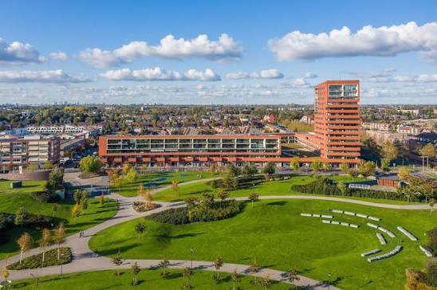
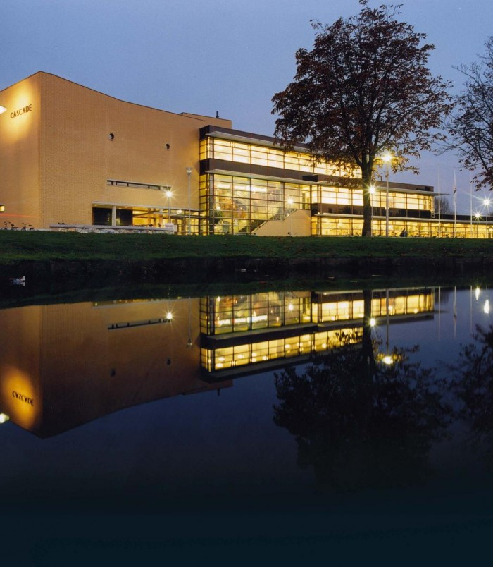

Sophiapark
Het Sophiapark is een mooi park waar je kunt wandelen, spelen en genieten van de natuur.
Hendrik-Ido-Ambacht
De streek wordt al sinds ongeveer het jaar 1000 permanent bewoond.
Ambacht was vroeger bekend om het slopen van oude schepen.
Het dorp heeft verschillende monumenten.
Ambacht groeide flink na de Tweede Wereldoorlog.
Ambacht ligt aan de rivier de Waal.
Het Sophiapark is een mooi park waar je kunt wandelen, spelen en genieten van de natuur.

Cascade is een cultureel centrum waar verschillende voorstellingen en activiteiten worden georganiseerd.
